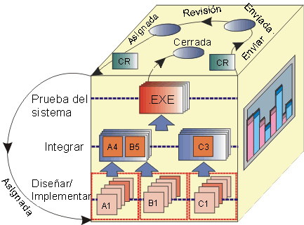

|
Solicitud de cambio (CR): un producto de
trabajo enviado formalmente que se utiliza para rastrear todas las solicitudes del interesado, incluidas funciones nuevas, solicitudes
de mejora, defectos, requisitos cambiados e información relacionada con el estado a través del ciclo vital del
proyecto. El historial de cambios se mantendrá junto con la solicitud de cambio, incluidos todos los cambios de estado,
y las fechas y los motivos de dicho cambio. Esta información estará disponible para las revisiones repetidas y para el
cierre final.
Panel de control de cambios (o configuración) (CCB): el panel que supervisa el
proceso de cambio consistente en representantes de todas las partes interesadas, incluidos los clientes, los
desarrolladores y los usuarios. En un proyecto más pequeño, un único miembro del equipo, como el gestor de proyectos o
el arquitecto de software, puede desempeñar este rol. En Rational Unified Process, esto lo muestra el Rol de gestor de control de cambios.
Reunión de revisión del CCB: la función de esta reunión
es revisar las solicitudes de cambio enviadas. En la reunión, se realiza una revisión inicial del contenido de
la solicitud de cambio para determinar si se trata de una solicitud válida. Si es así, se determina si el cambio está
dentro o fuera del ámbito del release actual, en función de la prioridad, la planificación, los recursos, el nivel de
esfuerzo, el riesgo, la gravedad y otros criterios relevantes que determine el grupo. Esta reunión suele tener lugar
una vez por semana. Si el volumen de la solicitud de cambio aumenta sustancialmente, o cuando se está llegando al final
de un ciclo de release, la reunión puede tener lugar incluso diariamente. Los miembros típicos de la reunión de
revisión del CCB son el gestor de prueba, el gestor de desarrollo y un miembro del departamento de marketing. Puede que
los miembros consideren necesarios asistentes adicionales "según convenga".
Formulario de envío de solicitudes de cambio: este formulario se muestra cuando se envía una solicitud de
cambio por primera vez. En el formulario, únicamente se visualizan los campos que debe completar el emisor.
Formulario combinado de solicitudes de cambio: este formulario se muestra cuando se revisa una solicitud de
cambio que ya se ha enviado. Contiene todos los campos necesarios para describir la solicitud de cambio.
El esbozo siguiente del proceso de solicitud de cambio describe los estados de las solicitudes de cambio en sus
procesos generales, y a quién es necesario avisar durante el ciclo vital de la solicitud de cambio. El proceso general
asociado con las solicitudes de cambio se describe en el apartado Tarea: Establecer el proceso de control de cambios.
El siguiente ejemplo muestra tareas de ejemplo que puede adoptar un proyecto para gestionar una solicitud de cambio
(CR) a lo largo de su ciclo vital (pulse en los elementos del diagrama para ver las descripciones):

Descripciones de las tareas del proceso de Gestión de solicitudes de cambio (CRM) de ejemplo:
|
Tarea
|
Descripción
|
Responsabilidad
|
|
Enviar CR
|
Cualquier interesado en el proyecto puede enviar una solicitud de cambio (CR). La solicitud de cambio
se registra en el sistema de seguimiento de solicitudes de cambio (p.ej., Rational ClearQuest) y se
coloca en la cola de revisión de CCB, estableciendo el estado de solicitud de cambio en
Enviado.
|
Emisor
|
|
Revisar CR
|
La función de esta tarea es revisar las solicitudes de cambio enviadas. En la reunión del
CCB, se realiza una revisión inicial del contenido de la solicitud de cambio para determinar si se
trata de una solicitud válida. Si es así, se determina si el cambio está dentro o fuera del ámbito del
release actual, en función de la prioridad, la planificación, los recursos, el nivel de esfuerzo, el
riesgo, la gravedad y otros criterios relevantes que determine el grupo.
|
CCB
|
|
Confirmar Duplicar o
Rechazar
|
Si se sospecha que una solicitud de cambio es un Duplicado o que se ha
Rechazado como solicitud no válida (p.ej., error del operador, solicitud no reproducible,
su forma de funcionar, etc.), se asigna un delegado del CCB para confirmar la solicitud de cambio
duplicada o rechazada y para reunir más información del emisor, si es necesario.
|
Delegado del CCB
|
|
Actualizar CR
|
Si es necesaria más información (Más información) para evaluar una solicitud de cambio, o
si una solicitud de cambio se rechaza en un punto del proceso (p.ej., se confirma como un
Duplicado, Rechazada, etc.), se notifica al emisor para que pueda
actualizar la solicitud con información nueva. Entonces, la solicitud de cambio actualizada se vuelve a
enviar a la cola de revisión de CCB para tener en cuenta los nuevos datos.
|
Emisor
|
|
Asignar y planificar
trabajo
|
Una vez que se ha abierto una solicitud de cambio, el gestor de proyectos asigna el
trabajo al miembro del equipo apropiado en función del tipo de solicitud (p.ej., solicitud de mejora,
defecto, cambio de documentación, defecto de prueba, etc.) y realiza las actualizaciones necesarias en
la planificación del proyecto.
|
Gestor de proyectos
|
|
Realizar cambios
|
El miembro del equipo asignado efectúa el conjunto de tareas definidas en la sección adecuada del
proceso, como requisitos, análisis y diseño, implementación, producir materiales de soporte al usuario
y prueba de diseño para realizar los cambios solicitados. Estas tareas incluyen todas las tareas de
prueba de unidad y revisión normal que se describen en el proceso de desarrollo normal. Entonces, la
solicitud de cambio se marcará como Resuelta.
|
Miembro del equipo asignado
|
|
Verificar cambios en la
compilación de prueba
|
Cuando el miembro del equipo asignado (analista, desarrollador, verificador, escritor técnico, etc.)
haya Resuelto los cambios,estos se colocarán en una cola de prueba que se asignará a un
verificador y se verificará en una compilación de prueba del producto.
|
Verificador
|
|
Verificar cambios en
la compilación del release
|
Una vez que los cambios resueltos se hayan verificado en una compilación de prueba del
producto, la solicitud de cambio se coloca en una cola del release para verificarse con una compilación
del release del producto, producir notas del release, etc. y cerrar la solicitud de
cambio.
|
Delegado del CCB (integrador del sistema)
|
El siguiente diagrama de ejemplo muestra estados de ejemplo y a quién es necesario avisar durante el ciclo vital de una
solicitud de cambio (CR) [Pulse en los elementos del diagrama para ver descripciones]:

Descripciones del estado de la gestión de solicitudes de cambio (CRM) de ejemplo:
|
Estado
|
Definición
|
Control de accesos
|
|
Enviado
|
Este estado se produce como resultado de 1) un nuevo envío de solicitud de cambio, 2) la actualización
de una solicitud de cambio existente o 3) la consideración de una solicitud de cambio
pospuesta para un ciclo de release nuevo. La solicitud de cambio se coloca en la cola de
revisión de CCB. Esta acción no tiene como resultado ninguna asignación de propietario.
|
Todos los usuarios
|
|
Pospuesta
|
Se determina que la solicitud de cambio es válida, pero está "fuera del ámbito" del release actual. Las
solicitudes de cambio que se encuentran en estado Pospuesta se conservarán y se volverán
a considerar en releases futuros. Se puede asignar un release de destino para indicar el marco horario
en que se debe enviar la solicitud de cambio para que vuelva a la cola de revisión de
CCB.
|
Administrador
Gestor de proyectos
|
|
Duplicada
|
Una solicitud de cambio en este estado se considera un duplicado de otra solicitud de cambio que ya se
ha enviado. Las solicitudes de estado las puede poner en este estado el administrador de revisión del
CCB o el miembro del equipo asignado para resolverlas. Cuando la solicitud de cambio se coloca en
estado Duplicada, se registra el número de la solicitud original (en la pestaña Archivos
de datos adjuntos de ClearQuest). Inicialmente, un emisor debe consultar en la base de datos de
solicitudes de cambios si una solicitud determinada tiene duplicados antes de enviarla. Esta operación
evitará varios pasos del proceso de revisión y, por lo tanto, nos ahorrará un montón de tiempo. Los
emisores de solicitudes de cambio duplicadas deben añadirse a la lista de notificación de la solicitud
de cambio original para futuras notificaciones relacionadas con la resolución.
|
Administrador
Gestor de proyectos
Gestor de QE
Desarrollo
|
|
Rechazada
|
Un revisor del CCB o un miembro asignado del equipo determinan que una solicitud de cambio en este
estado no es válida o que es necesaria más información del emisor. Si ya está asignada
(Abierta), la solicitud de cambio se elimina de la cola de resolución y se vuelve a
revisar. Una autoridad designada del CCB se asigna para la confirmación. No es necesario que el emisor
realice ninguna acción, a no ser que lo considere necesario; en ese caso, el estado de la solicitud de
cambio se cambiará a Más información. La solicitud de cambio volverá a revisarse en la
reunión de revisión del CCB teniendo en cuenta cualquier información nueva. Si se confirma que no es
válida, el CCB cerrará la solicitud de cambio y notificará al emisor.
|
Administrador
Gestor de proyectos
Gestor de desarrollo
Gestor de pruebas
|
|
Más información
|
No hay datos suficientes para confirmar la validez de una solicitud de cambio Rechazada o
Duplicada. El propietario se cambia automáticamente por el emisor, al que se le solicita
que proporcione más datos.
|
Administrador
|
|
Abierta
|
Se ha determinado que una solicitud de cambio en este estado se encuentra "en el ámbito" del release
actual y que espera una resolución. Se resolverá antes que un objetivo de destino próximo. Se define
como perteneciente a la "cola de asignación". Los miembros de la reunión son la única autoridad que
puede abrir una solicitud de cambio en la cola de resolución. Si se detecta una solicitud de cambio de
prioridad dos o superior, debería avisarse inmediatamente al gestor de desarrollo o de QE. En este
punto, puede decidir convocar una reunión de revisión del CCB urgente o limitarse a abrir la solicitud
de cambio en la cola de resolución inmediatamente.
|
Administrador
Gestor de proyectos
Gestor de desarrollo
Departamento de QE
|
|
Asignado
|
Una solicitud de cambio abierta es responsabilidad del gestor de proyectos, que debe
asignar el trabajo en función del tipo de solicitud de cambio y actualizar la planificación, si es
apropiado.
|
Gestor de proyectos
|
|
Resuelta
|
Significa que la resolución de esta solicitud de cambio se ha completado y que está preparada para su
verificación. Si el emisor era un miembro del Departamento de QE, el propietario se cambia
inmediatamente al miembro de QE que envió la solicitud; de lo contrario, cambia al gestor de QE para
que efectúe la reasignación manual.
|
Administrador
Gestor de proyectos
Gestor de desarrollo
Gestor de QE
Departamento de desarrollo
|
|
La prueba ha fallado
|
Una solicitud de cambio que falla la prueba en un release o una compilación de prueba se pone en este
estado. El propietario se cambia automáticamente por el miembro del equipo que resolvió la solicitud de
cambio.
|
Administrador
Departamento de QE
|
|
Verificada
|
Una solicitud de cambio en este estado se ha verificado en una compilación de prueba y ya
está preparada para incluirse en un release.
|
Administrador
Departamento de QE
|
|
Cerrada
|
Solicitud de cambio que no requiere atención. Este es el último estado que se puede asignar a una
solicitud de cambio. El administrador de revisión del CCB es el único que tiene la autoridad para
cerrar una solicitud de cambio. Cuando se cierra una solicitud de cambio, el emisor
recibe una notificación por correo electrónico con la disposición final de la solicitud de cambio. Una
solicitud de cambio se puede cerrar: 1) después de que la resolución verificada se
haya validado en una compilación del release, 2) cuando se confirme el estado de Rechazada o 3)
cuando se confirme que es un Duplicado de una solicitud de cambio existente. En el último caso
se informará al emisor de la solicitud de cambio duplicada y se añadirá a dicha solicitud de cambio
para notificaciones futuras (consulte las definiciones de los estados "Rechazada" y
"Duplicada" para obtener más detalles). Si el emisor desea rebatir un cierre, debe
actualizar la solicitud de cambio y volver a enviarla para que el CCB la revise.
|
Administrador
|
Las 'etiquetas' de estado proporcionan la base para informar de las estadísticas de solicitudes de cambio (antigüedad,
distribución o tendencia).

Estados de la solicitud de cambio en el contexto del cubo de CM.
|